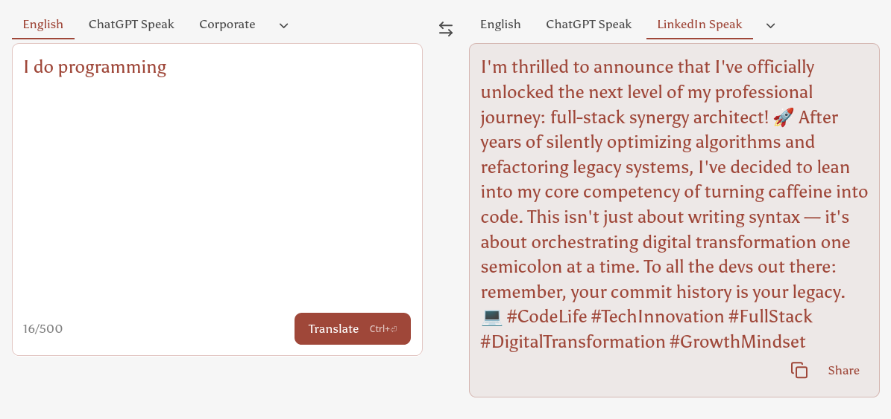

What is Programming?
From Code to System Prompts
What is programming?
What LinkedIn thinks programming is

https://www.polytranslator.com/linkedin-speak/
The dictionary definitions
Programming has evolved
- Past: We wrote every step in code (loops, conditions, memory management).
- Now: We can describe goals and constraints in natural language and let a model figure out the steps.
- Latest shift: We can control the behaviour of an entire system by tuning the system prompt of a Large Language Model (LLM).
Your task in this course
You will tune the system prompt of a robot-arm system so that it does what you want.
Think of the prompt as the robot’s job description:
- What is its role?
- What should it do?
- What must it avoid?
- How should it respond when something goes wrong?
Tip 1: Give the LLM a clear job description
Without a system prompt, the LLM has no idea what it needs to do.
Analogy: pulling a random person off the street
Imagine you pull a random person off the street, put them in an excavator, and say:
“Dig.”
They would not know:
- How to drive the excavator
- Where to dig
- How large the pit should be
- What hazards to watch for
The system prompt is the menu or instruction sheet that answers those questions.
Tip 2: Experience does not transfer across sessions
If an LLM accumulates experience during a chat session, that experience disappears when you start a new session.
This is like how different people trip on the same uneven step: each new walker does not inherit the muscle memory of the previous one.
See this video of people tripping on the same spot
Practical workflow for system-prompt tuning
- Run the system with the current prompt.
- Watch the failure. What did the model do wrong?
- Update the system prompt with a clearer rule, example, or constraint.
- Start a new session and test again.
- Repeat until the behaviour is reliable.
Limitations of system-prompt tuning
System prompts are powerful, but they are not magic.
| Wrong tool or API |
The code itself may need to change. |
| Unsafe or impossible action |
No prompt can bypass physics or security. |
| Consistent reasoning errors |
The model may lack the right internal knowledge. |
| Repeated hallucinations |
Researchers may need to update the model weights or training data. |
When to go deeper
- Prompt tuning is the fastest first step.
- Code changes are needed when the logic, data flow, or tools are wrong.
- Model tuning (weights / training) is needed when the model repeatedly lacks the capability, knowledge, or reasoning pattern required for the task.
Summary
- Programming = giving precise instructions to control a system.
- Today, those instructions can be a system prompt for an LLM.
- A clear prompt is like a good instruction menu for an excavator operator.
- Mistakes in one session do not transfer; bake the lessons into the prompt.
- Prompts have limits — sometimes you still need to change the code or the model weights.